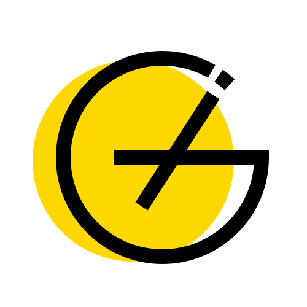
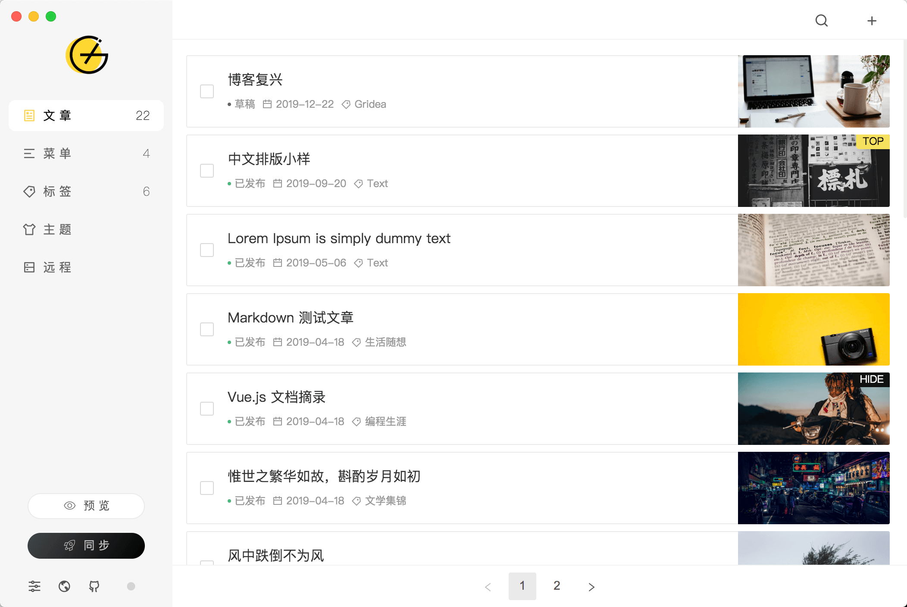
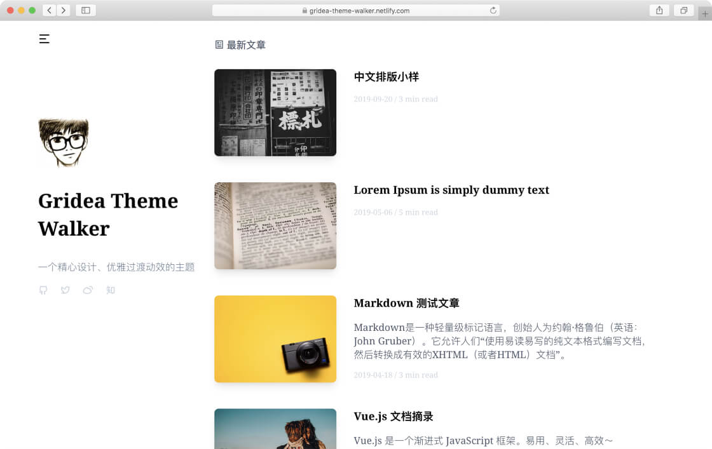
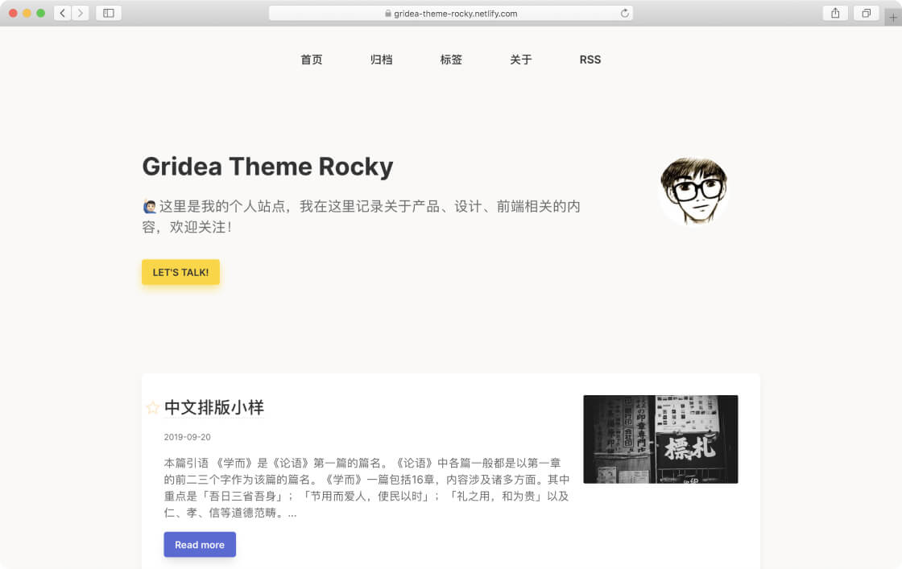
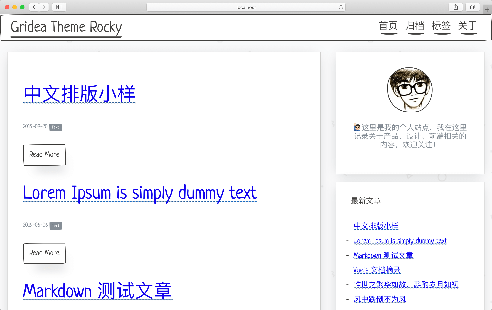
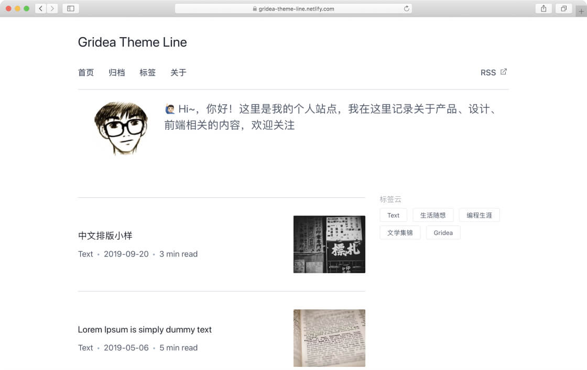

Gridea
首页
文档
主题
博客
Gridea Web🆕
可以，写博客的那个劲儿又回来了
Gridea 是一个静态博客写作客户端，帮助你更容易地构建并管理博客或任何静态站点。
立即开始
GitHub

文章列表
编辑器
主题设置
为什么你会喜欢使用 Gridea
。
Markdown
知道你钟爱 Markdown 写作，我们也是
快且安全
Gridea 所有文件都在你的本地，构建为更快更安全的静态网站，无需管理数据库，向 Wordpress 说拜拜
简而不凡
简单几步即可搭建网站。无论博客抑或企业站点，强大的自定义能力，轻松驾驭
还有你搭建网站最关心的(部分功能需要主题支持)：
主题、封面图、标签、菜单、多平台部署、评论、多语言、RSS、KaTeX 公式、Google Analytics、社交链接、TOC...
主 题
。




浏览更多
更多人选择
。
已经有超过
28,155
位小伙伴使用 Gridea 成功搭建了自己的站点
统计数据非实时更新。
选择你的版本
。
Mac OS
Windows
Linux
当前版本: v0.9.3
✨ What's new?
国内 Gitee 下载源
Mac OS
Windows
Linux
订阅更新
Powered by
Gridea
· Made with ❤️ by
EryouHao